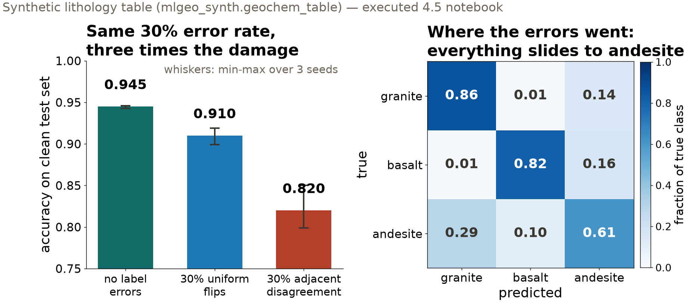
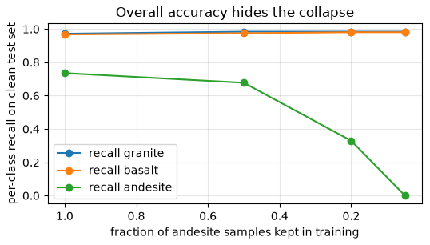

Session 24 · Wed Nov 25 · Book section 4.5 (§1–3)
🔬
A working model rests on three pillars: the training data, the architecture, the training strategy.
How high can any architecture score when the labels themselves disagree?
Lab notebook: 4.5 The three pillars of model development — sections 1–3 today, 4–5 on Monday.
✗ Label errors in the grading data: ~3% of test labels in ten canonical benchmarks are wrong, enough to flip model rankings.
Northcutt, C. G., Athalye, A., & Mueller, J. (2021). Pervasive label errors in test sets destabilize machine learning benchmarks. NeurIPS Datasets and Benchmarks Track.
✓ Measuring the disagreement: hand experts the same seismic image and their interpretations diverge — labels are interpretations, and the spread is measurable.
Bond, C. E., Gibbs, A. D., Shipton, Z. K., & Jones, S. (2007). What do you think this is? “Conceptual uncertainty” in geoscience interpretation. GSA Today, 17(11), 4–10.
📖 Why random flips are the kind case: with enough data, deep networks average away massive uniform label noise.
Rolnick, D., Veit, A., Belongie, S., & Shavit, N. (2017). Deep learning is robust to massive label noise. arXiv:1705.10694.
Labels are interpretations. The disagreement between experts is measurable — and it caps what any model can demonstrate.

30% uniform flips cost 3.5 points. 30% adjacent-class disagreement costs 12.5 — the two mappers vote coherently, and more data makes the model more confident in their shared mistake.

Shrinking the rare class: overall accuracy drifts 0.946 → 0.881, while andesite recall collapses 0.735 → 0.000. Report per-class recall and the confusion matrix; never accuracy alone. Synthetic lithology table (mlgeo_synth).
0.933 mixed lab- and field-grade data, variance ignored
0.946 same data, loss weighted by 1/σ²
All-lab-grade reference: 0.950. Heteroscedastic = the noise level varies sample to sample — and the metadata usually says by how much.
One line of loss code recovers most of what mixed data quality costs. Any column named uncertainty, std_err, or pick_weight is an invitation.
| Defect | Signature | First fix |
|---|---|---|
| Uniform label noise | validation ceiling sags only on small datasets | audit labels; more data |
| Structured disagreement | one class annexes its neighbors; ceiling capped | measure inter-rater agreement, relabel |
| Class imbalance | accuracy fine, rare-class recall collapsing | class weights; check recall |
| Heteroscedastic noise | mixed-provenance table underperforms | weight the loss by 1/σ² |
Fixing a thousand labels usually beats adding a million parameters.
pixi run jupyter lab → mlgeo_4.5_ModelTraining.ipynbMonday: session II — uncertainty you can defend (4.5 §4–5) · HW-DL due Fri Dec 4 · classification leaderboard closed Nov 24
ESS 469/569 · Machine Learning in the Geosciences · Autumn 2026